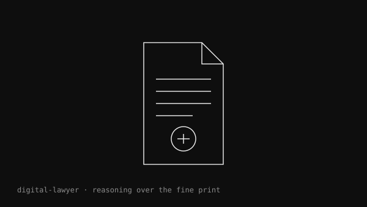
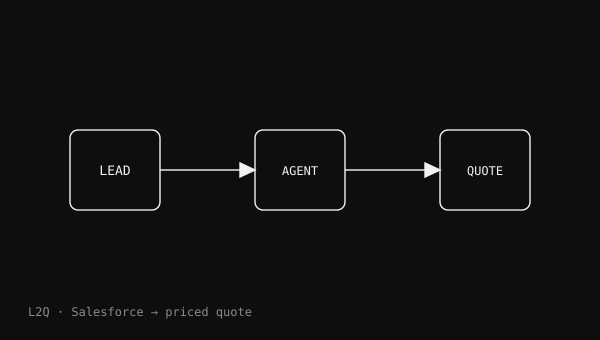

MCP Apps: when enterprise agents stop feeling like chat
Why tool calling is not the user experience—and what a serious POC should prove about usability, economics and governance.
Agent Sales Global Black Belt · Microsoft
I advise enterprise leaders on where agents can change a business process — not just add another interface. Then I lead the hands-on POC and design the path to governed production at scale.
I'm Scott Adams. Across 30+ years as a software engineer, product leader, founder and enterprise technology leader, I have helped turn emerging technology into operating change people can trust. Today I bring that experience to agentic AI at Microsoft.
I start with your outcome and your process, then choose the right surface across Microsoft 365 Copilot, Copilot Studio, Foundry, GitHub and MCP. The goal is a credible proof in your environment — with the architecture, governance and scale plan to take it further.
From business outcome to a governed, production-ready path.
Transformation lab
Start with an event-triggered Digital Customer Success Manager: a source-aligned, redacted replay of the real seven-stage engine with every external call and side effect disabled. The other three scenarios connect to public demo MCP endpoints on Azure, invoke fixed read-only tools, and host the actual Apps SDK widgets they return.
Demonstration data only. The CSM operational dashboards remain identity-gated and are never embedded here; live widgets run in isolated sandboxes and cannot execute follow-up tools.
event → Agent ID → seven-stage engine → deterministic route → supervised outcome
The replay follows the repository's real stages and rule IDs using synthetic inputs. It makes no external or API requests, writes no data and cannot deliver customer outreach.
Working reference builds
Each reference build starts with a different operating problem. The technology matters because it makes the new way of working possible — not because the architecture diagram is the outcome. Together they show the method: qualify the process, choose the best surface, prove it hands-on, and design the controls and operating model needed to scale.
01 · Autonomous customer success
A Digital Customer Success Manager starts when a usage, release or renewal event lands. It acts with its own Agent 365 identity, builds context, applies auditable routing rules, drafts from approved content and either handles the work or asks the human CSM for judgement.
Transformation pattern: replace periodic queue management with continuous, event-driven customer success — while preserving manager judgement and sponsor control.
02 · Enterprise services
This reference build demonstrates how employees and managers could complete cross-system tasks with less navigation. Shared MCP servers support a Copilot declarative agent, MCP Apps in compatible hosts, five Copilot Cowork plugins and an autonomous demo integrated with Microsoft Agent 365.
Transformation pattern: replace duplicated integration work with a shared MCP capability layer, then apply identity, policy and operations end to end for each host and runtime.


 Live workflow available
Live workflow available
03 · Frontline operations
Weather, travel, rota, stock, training, policy and customer signals become one continuous operational conversation — designed for people who do not sit at a desk.
Transformation pattern: move from dashboards that report work to an agent that helps run the shift.
04 · Revenue operations
A regulated fintech sales team moves from CRM lookups to account briefs, meeting preparation, proposals, pipeline packs and follow-up work across Copilot and Cowork.
Transformation pattern: use one MCP layer for fast transactional chat and deeper artefact-producing work.
05 · Regulated digital labour
Alex Morgan reviews contracts clause by clause, marks up Word documents, records risk decisions, escalates beyond delegated authority and bills time — with an Entra-backed identity and audit trail.
Transformation pattern: manage capable agents as members of the workforce, not anonymous automations.
How I work with customers
Outcome first. Best surface. Real proof. Governed scale.
The proof is time-boxed, grounded in representative customer data and built with production patterns. Success means the business outcome, security boundary, operating model and next scale decision are all clearer than when we started.
Find the process where context, judgement and action create meaningful value. Define the trigger, the changed way of working and evidence that would make the case credible.
Output · outcome and triggerMap the data, systems, people, decisions and controls involved. Distinguish human-led assistance from event-triggered process transformation so each is designed appropriately.
Output · POC scope and exit criteriaLead the POC hands-on using the right mix of Microsoft 365 Copilot, Copilot Studio, Foundry, GitHub, MCP and custom code — never forcing the problem into one product.
Output · working, instrumented POCTest the outcome and the production realities: identity, permissions, grounding, human judgement, observability, cost, safety and operational ownership.
Output · evidence and production decisionTurn the proof into reusable architecture, governance, runbooks and an adoption plan so engineering teams and delivery partners can scale the pattern with confidence.
Output · governed scale planExperience customers can rely on
I have spent more than three decades turning emerging enterprise technology into operating change people can trust. That path has taken me from hands-on software engineering and BI product leadership to founding a company, leading technical teams and advising enterprise and public-sector leaders on consequential technology decisions.
Customers bring me the difficult, cross-system process — not a product shopping list. I work at both altitudes: the executive case for change, and the architecture, code and controls that prove the new operating model can actually run. The advice is platform-led; the proof is hands-on; the destination is governed production, not a successful demo.
Viewpoints
Why tool calling is not the user experience—and what a serious POC should prove about usability, economics and governance.

Why capable agents need identity, delegated authority, supervision and a place in the operating model.

The control plane, tools and open protocols required when an organisation moves from assistants to an agent workforce.

One MCP layer can power quick transactions and deep work that produces finished dashboards, decks and reports.
A useful first conversation
Bring the business outcome, the process, the systems and the hard constraints. I will help you qualify the opportunity, choose the right platform approach, shape a credible POC and define the path to scale and govern it if the proof succeeds.